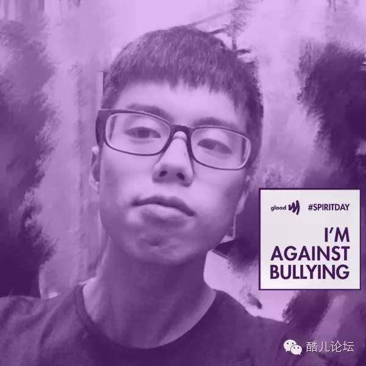
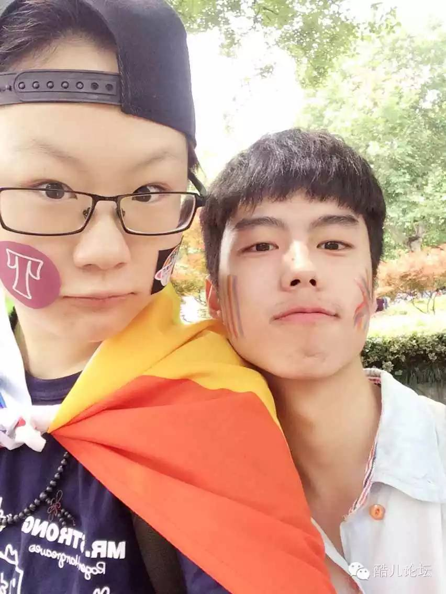
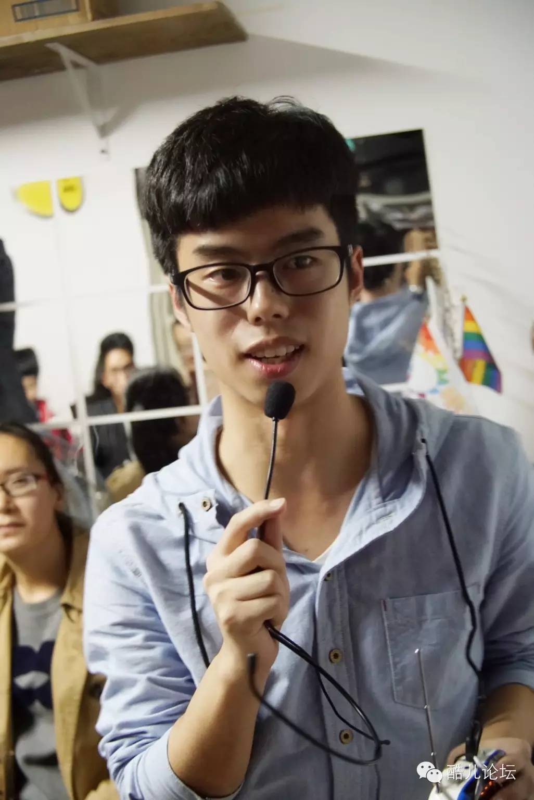
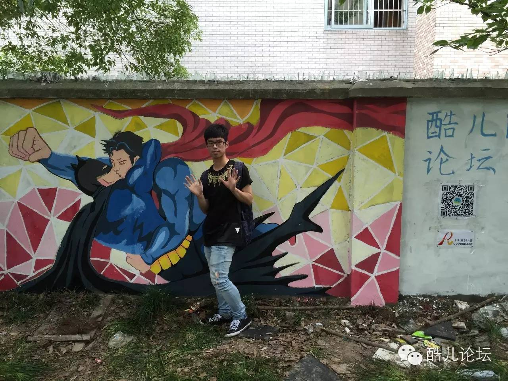
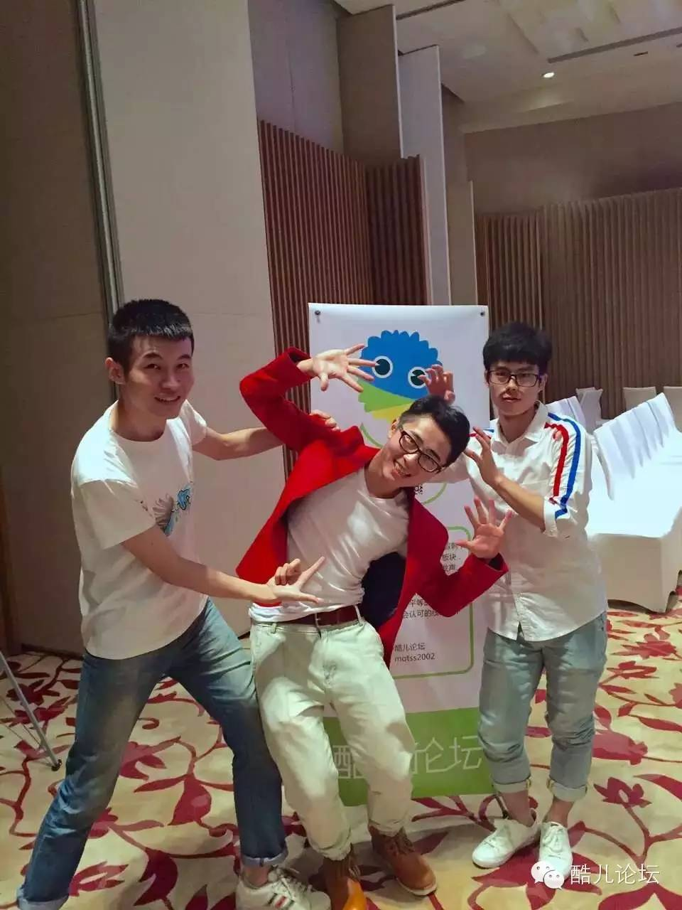

志愿者|我做，因为我认同；我爱，因为我坚持
2015年酷儿论坛普通志愿者纳新已经只剩3天了！
就知道你们肯定还在犹犹豫豫不作为！
不爆点猛料，看来是不行了！
酷儿论坛现任站长/理事长 Owen 做客本期访谈，和你一起聊聊他与酷儿，那些不得不说的事~~【知道你们其实是来看照片的，我们站长可是优质事业0，爆照是一张一张的，所以记得刷到最后哦】
本期嘉宾——Owen旭：

酷儿论坛现任站长/理事长，浙大本科三年级在读。身高体重。。。想知道你去报名呀~~特点：非常有自己想法，然后很独立，很努力，【人送外号事业0，233】，对性别、性向，以及和性有关的各种问题深有研究【是你们自己想歪的……】
说明：以下为访谈实录，【】内容为小编画外音~~
【画风突然变正常的站长】
酷儿论坛是我加入的第一个LGBT组织但不是第一个公益组织。
我一直都比较喜欢做公益，高中的时候虽然很忙也会在业余时间做志愿者，online的和现实的都有，比如一些大型赛事。高三拿到保送录取就订机票和一个朋友去尼泊尔待了半个月，陪孤儿、教学生，也顺带成年礼。【淡定地好像是去隔壁邻居家帮忙看小朋友一样……】
大学里我加的唯一一个学校社团是西协（跟我念：心系西部协会）。【这广告插的……】
我蛮享受这些过程，要说为什么的话，可能是因为我在初中高中竞赛的时候得到了太多人的帮助，所以我也想把这样的行动传递下去。
至于LGBT公益，我很早就知道酷儿论坛，大一也经常参加活动，记得有一次是雷闯的讲座在建工之家，那天下暴雨紫金港就像要被淹掉一样，但是讲座现场大家都很认真听雷闯和另一位著名公益人士寇延丁女士的分享。【这回我来插个广告~我们还在坚持每年办各类主题讲座哦！】
后来我知道从那次开始建工之家不再为酷儿论坛提供场地，原因是建工团委知道了我们组织的身份。这是我第一次在现实生活中遇到实实在在对同志的歧视，也让我第一次感受到了那种愤怒和不满。【站长你之前一直活在宠爱的花园里嘛……】
大二暑假我去UCLA交流的时候旁听了一门LGBT study和social movements的课程，了解到了与LGBT相关的各种议题和其他社会议题之间的交叉，那时我把课程内容整理发到了论坛上，包括采访、参观照片等等。
当时暖阳找到我，希望我做志愿者，于是我就这样加入酷儿论坛做志愿者了。
【于是你就这样当上了站长/理事长……】

（2015年6月上海骄傲节LGBT小组开放日）
我觉得“个性”其实是想说我drama queen哈哈哈哈。【Drama Queen，你看到我在这篇访谈里各种爆照，一定要原谅我，双手合十……】
我也不知道他们到底怎么看我的，可能是说我心直口快之类的吧，对不爽的事我也会不留情面直接喷。
当然现在作为管理我已经改变很多了，毕竟平等沟通对于志愿者之间是还是很重要的。至于独立也算是符合的一个特点吧，从小独立惯了，不爱受人掣肘。

（2015年国际不再恐同日骑行）
你觉得有个性或者说一定程度的激进是公益人所必需的吗？
我觉得对于一个要带领大家冲破围栏和禁锢的人来说，没有一点激情（drama）和激进也是不行，我们倡导的观念本来对于大众来说就已经是一个“激进”的事物，但是我们本身可能觉得很正常。【这段话我超喜欢！】
徒劳这个词蛮功利主义的。我倒没有觉得公益组织一定就会促进社会的改变，大佬们也一天到晚吵来吵去说这个有用那个没用。我比较喜欢寇老师的一本书《行动改变生存》，与其互相争执不如大家都去做，总会有一些变化，至于最后是搞公益的人做对了还是不搞公益的人做对了，有那么重要么？从个人来讲，我做这些事情，完全是因为我认同它、享受过程和结果，而不是因为它是公益。

有没有哪一刻最想放弃？
有啊，总会有低潮期的，原因嘛比如猪队友，【不是我，不是我，不是我】比如外界压力，也会自我怀疑。但是总会有那么一两件在乎的事和在乎的人会帮助我们挺过来，做论坛的时候其实收获到的感动也蛮多的。关键是现在没有合适的接班人，不然按我的个性什么时候想甩手就甩手了。
【总结：既然万事都会累，好歹我们还有爱，爱在酷儿，我们等你！】
加入论坛和出柜没有必然联系，我们并不会要求志愿者都走上大街举彩虹旗，更多的时候我们还是在社群内部做事。如果你还是一个不敢见其他同志的深柜，我们以前也不是没有这样的志愿者，你也可以把加入志愿者当做一个提升自我认同的过程。【所以别担心啦，同志公益≠我是基佬】
实际上我也并没有向所有身边人出柜，我室友都不知道，因为我跟他们有限的交流不会涉及到这里，“ask and tell”是我的原则，不会把同志身份作为我交友过程首要考虑的事，但我也不担心因为去参加公众活动而被同学知道，他们如何表现是他们自己的选择。【ask and tell，不问不说，不妨一试哦~】
不过话说回来，为什么加入论坛就一定是弯的？我们有异性恋的核心志愿者，各种公众活动也有异性恋的盟友来支持，真的担心完全可以说自己是来支持的。
【总结：所以各位同道中人，别再犹豫啦，快加入我们吧！】

（2015年6月下沙骄傲涂鸦）
我觉得直人群体来加入我们是一件非常棒的事！
首先是因为我们所做的事其实并非是同志群体单独面对的问题，同志面临的污名、歧视的根源：性别不平等、生育压力等同样也再影响着异性恋群体，这是一件大家都能够获益的事。
其次，对于每一个志愿者和同志来说，获得来自“主流”群体的支持也是一件很受鼓舞的事。
我们现在的直人志愿者做的事和其他志愿者没有太大差别，将来也是这样，但是我希望直人志愿者能够将我们做的事传播给更多的直人朋友。
【总结：所以各位直男直女，也别犹豫啦，公益不分身份！】

（2015年6月上海骄傲节LGBT小组开放日）
采访至此毕，看了Owen站长这么多的感言【私房照】，不点击阅读原文或扫下面二维码报名的……小编相信不会有这样的人的^_^
一个志愿者看得不过瘾？小编提前透露一下，明天还会再采 bao 访 zhao 一位高贵的设基狮哦~~快摆好小板凳，我们明天不见不散~~
这个世界是美好的，请用善和爱去寻觅。我们在酷儿等你，你在哪？